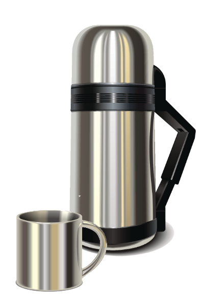

Hrnec horalů
Pro všechny, kdo nechtějí spoléhat na instantní polévky! Tento kotlík s kapacitou 5 litrů je ideální pro velké party i sólo gurmány. Váží víc než průměrná svačina, ale zato pojme dostatek guláše pro všechny hladové kamarády. S pohodlnou rukojetí, kterou budete rozhodně vnímat při každém kroku.
899,- Kč
Termoska Drsoň
Když káva musí být teplá celou cestu až na vrchol! Termoska s robustním dvouplášťovým designem a váhou, která přidá na svalech. Drsoň pojme až litr a půl horkého čaje, který udrží teplotu v jakémkoliv počasí. Takže i když vaše nohy odpadnou, váš čaj bude v kondici.
799,- Kč
Spacák Pohodlíčko
Pro ty, kteří při trampingu rádi sledují pohodlí z dálky! Tento spacák je tak prostorný a tak plochý, že je ideální na spaní, sezení i jako náhrada deky, když je venku trochu chladněji. Jeho extra váha vás udrží stabilně při zemi, i když to venku bude trochu fičet.
3599,- Kč
Křesadlo Zapálák 3000
Pro ty, co umí rozdělat oheň i s mokrým dřevem. Nebo to aspoň tvrdí! Kompaktní, ale poctivě těžké křesadlo, které by unesl i zálesák, co váží o pár kilo míň než jeho krosna. Zapálí oheň i bez zápalek a přináší kouzlo ohně do každého tábořiště… pokud najdete někoho, kdo ví, jak ho použít.
499,- Kč
Skládací stolička Kempkovka Deluxe
Pro ty, kdo chtějí sedět pohodlně i v lese! Židlička, která se rozkládá snadno, pokud s sebou máte extra pár rukou. Robustní dřevěná konstrukce a váha srovnatelná s menším batohem – pro ty, kdo chtějí zážitek na těžko se vším všudy. Nosit ji je trochu oříšek, ale posezení na ní má vážně styl.

849,- Kč
Cestovní Grilíček
Protože když už jste na těžko, tak ať to stojí za to! Grilíček je sice malý, ale zato těžký a výkonný. Ideální pro kempování, když si chcete dopřát maso přímo z ohně. Se stabilní konstrukcí a solidní hmotností, která při přenosu zaručuje, že se pořádně zapotíte
1199,- Kč
Košile Horal
Ať už lezete po horách, nebo se jen tak flákáte u ohně. Klasická flanelka, která je univerzální a neskutečně pohodlná. Je příjemně těžká, aby vás udržela v teple, a má styl, který říká, že jste v přírodě jako doma. Při prvních mrazících postačí sama, a když přituhne, snadno ji hodíte pod další vrstvy. Horalka je prostě evergreen.
1349,- Kč
Vesta Medvědí kožich
Extra vrstva tepla, protože proč by měl mrznout trup, když může být jako v pelíšku? Medvědí kožich je vesta z kvalitního vlněného fleecu, která se tváří jako domácí medvědí kůže. Skvěle doplní váš zimní outfit, když už nemáte sílu nést další svetr, ale pořád chcete mít tělo v teple. Navíc přidává na stylu drsného zálesáka.
1899,- Kč
Boty Šlapačky
Když chcete cítit každý krok (ale bez omrzlin)! Šlapačky jsou masivní kožené boty, které nerozhází bláto, kamení ani třeskutý mráz. Mají poctivou podrážku s drsným vzorkem, který vás bezpečně udrží na cestě, a dvojité švy, které drží pohromadě snad i kámen, natož botu. Ano, jsou těžké, ale s každým krokem se budete cítit jako pravý zálesák, kterého žádná překážka nerozhodí.
3799,- Kč
Botah Zádař (60l)
Pro ty, kdo ví, že všechno na zádech mít prostě musíte! Zádař je masivní batoh s objemem, který pojme kotlík, ešus i beranici – a ještě zbude místo na týdenní zásoby. Se silnými popruhy a bederním pásem to zvládnete i přes nekonečné kopce, i když po hodině možná zapochybujete, jestli toho nemáte až moc. Ale věřte, Zádař vydrží všechno, včetně tvrdého dopadu na zem, když už vaše nohy řeknou „dost“.

2499,- Kč
karitmatka Těžká pohoda
Protože každý si zaslouží trochu pohodlí, i když to něco váží! Těžká pohoda je pořádná karimatka z robustní pěny, která odolá každému kamínku, kořeni i promrzlé zemi. Není nejlehčí ani nejskladnější, ale když si na ni lehnete, ucítíte opravdový luxus trampingu. A pokud se vám ji nechce nosit, vždycky ji můžete svěřit parťákovi s lehčím batohem – ten vám za tu pohodu u ohně určitě poděkuje!
1259,- Kč
Vlněné ponožky Drtič mrazu
Pro nohy, které nechtějí mrznout (a nebojí se trochu chlupu)! Tyto masivní ponožky vás ochrání před zimou od prstů po kotníky. Ponožky jsou skvělé na zimní táboření a dlouhé procházky – ano, jsou trochu silnější a nevejdou se do každé boty, ale při tom teple, které vám zajistí, na to zapomenete. Pokud máte rádi styl ledního medvěda, tohle jsou ponožky pro vás.
799,- Kč